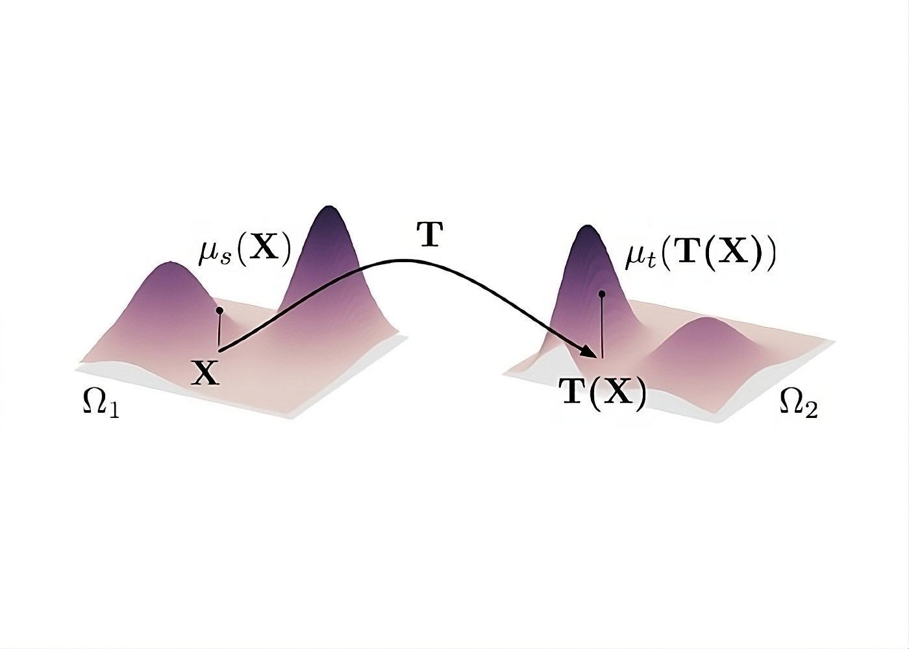

What is the Optimal Transport Problem?

First, let us begin with a general, or low-level, definition of the optimal transport problem. The most common explanation for this problem is as follows: Assume that you have dug a hole in the ground of \(X\) cubic feet. And you now also have a pile of dirt with an exact volume of \(X\) cubic feet. Now, consider a naïve method of filling the hole with all of the dirt you have accumulated in the pile. In order to fill this hole, you would have to move every individual dirt particle a certain distance from some location in the pile to some location in the hole. Once all particles have been moved, you will have filled your hole.
So, how would we define the optimality of our solution? To understand optimality in this case, we need to have some notion of cost for our solution. For this simple case, we can define cost quite simply. Let the cost of moving a single dirt particle be the distance this particle moves when it is picked up from the dirt pile and placed in the hole. We can quantify this as the euclidean distance from any given particle’s source location to its destination. So now, with our definition of cost, an optimal method of transporting all particles of dirt from the pile to the hole will be the one which minimizes the total cost incurred by transporting all particles. Thus, to have optimal transport, we have to minimize the total distance traveled by all particles in the set when filling the hole.
This is the most basic version of the optimal transport problem. It is essentially an extension of finding a minimum cost matching. Consider this problem as matching every source location of a dirt particle to some destination location in the most cost-optimal manner. Once we have found the minimum cost matching between the sets of source and destination locations, we have found the optimal transport plan.
Now, some may ask, why do we even worry about such a problem? In another post, I go further in-depth on some possible applications of optimal transport theory. But before I do, here is the gist of it. In mathematics, more specifically statistics, computing the distance between probability distributions intuitively has been a large obstacle. Distance in the statistic sense can take very different forms. One of the most popular definitions of a statistical distance is the Kullback-Leibler divergence. Although the most popular, this divergence is not the most desirable. This divergence is not symmetric and may even result in an infinite divergence in some cases. Therefore, the KL divergence is quite undesirable and unintuitive. With optimal transport theory, researchers look to develop a more intuitive and desirable form of statistical distance. That is why this problem is of such importance.
Finally, let us wrap up by extending the dirt pile and hole example to probability distributions. What would be the optimal transport plan of transforming a probability distribution \(A\) to probability distribution \(B\)? Conceptualize \(A\) as a 2-dimensional pile of dirt, the shape of which resembles the shape of the respective probability distribution. Additionally, conceptualize \(B\) as a 2-dimensional hole, the shape of which resembles the shape of the respective probability distribution. Now, we can “transform” distribution \(A\) into distribution \(B\) by simply placing the “dirt” from \(A\) to the hole from \(B\). The cost can be defined the same way as in our dirt pile example. When the total cost of transport is at its minimum, we have found the optimal transport plan. Intuitively, we can see that these are similar problems. Note that, if the two distributions are discrete, this problem can be solved in a manner similar to that mentioned above. However, in the case that the two distributions are continuous, the procedure is slightly different. In this case, we would have to compute the optimal transport between samples of the distributions. For \(n\) samples, each sample would be assigned a weight of \(1/n\), and then the optimal transport between the samples would be computed. When all sample points are equally weighted, the problem is known as the assignment problem.
Approximate Optimal Transport Problems
Optimal transport can be exactly computed, however, computing an exact solution often takes too much time for any practical usages. Because of this, the development of algorithms which compute exact optimal transport has slowed, and in turn we have seen a rise in popularity of approximation algorithms. These approximation algorithms aim to produce a near-optimal transport plan, usually within some predefined error. For some constant \(\varepsilon > 0\), an \(\varepsilon\)-approximate transport plan is one where the total cost of the transport plan is within \(\varepsilon n\) of the optimum. And often, algorithms which compute exact optimal transport are adapted to more-quickly compute an approximate transport plan. With a much faster execution, these approximation algorithms are more fit for practical usages in the real world.